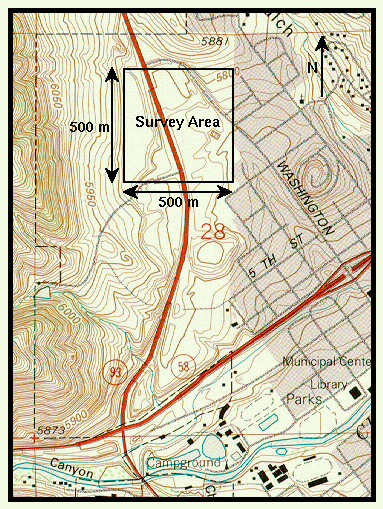

Request For Bid - Seismic
Bidding Scenario
You have been able to define the gross nature of the water table interface below the survey area. Like gravity or magnetic measures, resistivity measurements represent the integrated effect of all structures surrounding the electrodes. Unlike gravity and magnetics, however, the placement of sources (current electrodes) and receivers (potential electrodes) at differing locations to control the depth of penetration also has the effect of potentially misrepresenting horizontal variations in apparent resistivity as depth variations. Because of this, lateral variations in resistivity are difficult to detect using the sounding methods described previously. Other methods, namely profile methods, have been developed for such problems.
In addition to the potential complications produced by lateral variations in resistivity, the nature of the saturated sediment/bedrock interface should have been poorly defined by your resistivity survey. This is because your saturated sediment layer, with its low resistivities, acts as a channel to electrical current flow. Thus, very little current actually flows below this channel into the more resistive bedrock.

These things being said, the client is rather excited about the findings of the resistivity survey, particularly from the standpoint that the groundwater trapped behind the dike could potentially be used as a water source for the development. Unfortunately, the developers of this site do not own the water rights to the Clear Creek watershed. These water rights extend from Clear Creek itself to all of its tributaries both above and underground. Clear Creek is shown on the map to the right flowing from west to east about a half mile south of the site.
The client would therefore like to answer two questions concerning the groundwater underlying the site: 1) is there an exploitable underground reservoir beneath the site, and 2) is this reservoir part of the Clear Creek watershed? In her discussions with the owners of the Clear Creek watershed (the City of Golden), they have made it clear that if the answer to the second question is no, they will question this conclusion by legal means before relinquishing their rights to the groundwater. Thus, any conclusions you might make regarding the nature of the groundwater must be defendable in a court of law.
In an effort to further define the geometry of water table and the nature of the sediment/ bedrock interface, bids are being sought to collect and interpret P-wave seismic refraction observations. You are free to specify the number of refraction profiles to be collected and their locations and orientations within the survey area. Like the DC resistivity surveys, your surveys must be confined to the client's property.
Your submitted bid should contain the following:
- A brief description of the problem including your interpretation of the resistivity data already collected,
- A brief discussion of survey design considerations,
-
A survey plan including,
- Number of refraction spreads to be collected,
- Type of seismic source to be used (sledgehammer, shotgun, explosive),
- Number of active channels required to collect the observations (12,24,48,60,96,120,etc.),
- The location of the first active geophone in the spread in standard survey coordinates,
- Orientation of the geophone spread (east/west or north/south),
- The number of stations at which ground motion will be recorded,
- The distance between adjacent geophones,
- The number of source locations to be shot into the spread, and
- The location of each source relative to the location of the first geophone in the spread,
- A brief discussion of the survey design limitations and an estimate of the probability of success for this type of survey given the problem at hand, and
- An appendix that contains a list of "if-then" statements that describes the physics of the problem under consideration.
Your bid should be composed in the format of a memo and be no longer than two type-written pages. Feel free, however, to include as many appendices as necessary.